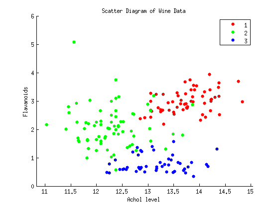
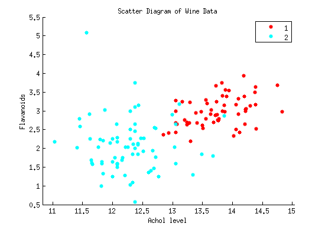
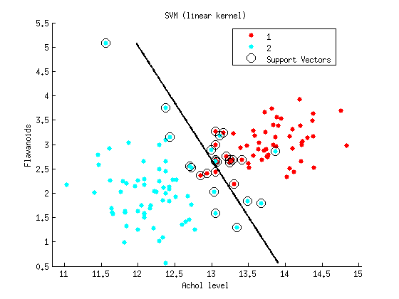
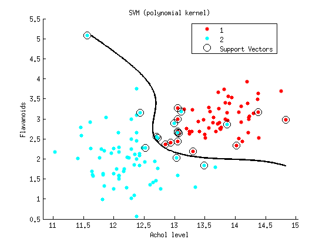
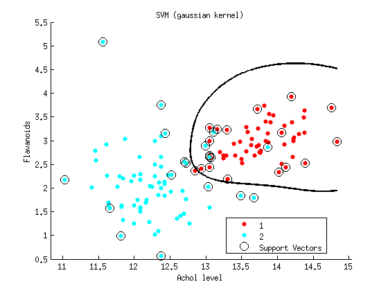
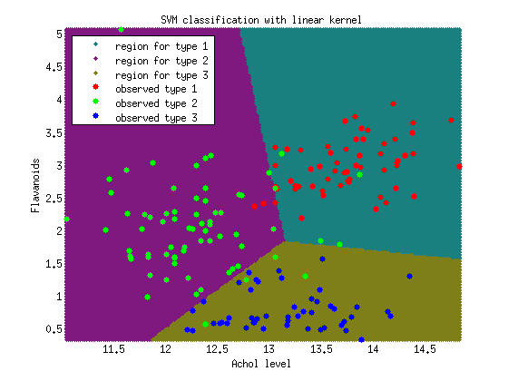
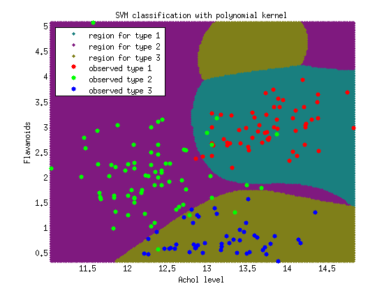
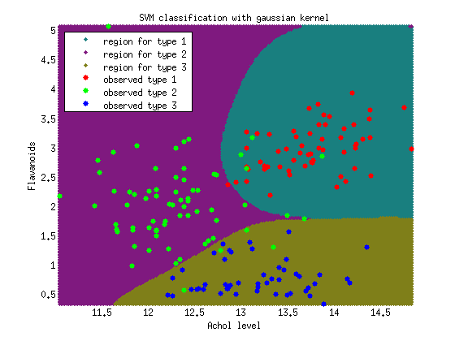

Support Vector Machine
Author: Erhu Du
Supervisor: Neal Davis
University of Illinois at Urbana-Champaign
Fall 2015
Contents
Load data and select features
Data source: Wine data
clear all mydata = csvread('data_wine_complete.csv', 1, 0); features = mydata(:, 2:end); labels = mydata(:, 1); figure(1) idFeatures = [1 7]; XX = features(:, idFeatures); YY = labels; gscatter(XX(:,1),XX(:,2),YY); xlabel('Achol level') ylabel('Flavanoids') title('Scatter Diagram of Wine Data') clear features idFeatures labels
SVM for binary-class classification
prepare data, select wine type 1 and wine type 2 for SVM fitting
figure(2) X = XX(1:130, :); Y = YY(1:130); gscatter(X(:,1), X(:,2), Y); xlabel('Achol level') ylabel('Flavanoids') title('Scatter Diagram of Wine Data')
fit a SVM for classification
figure(3) SVM = fitcsvm(X, Y,'Standardize',true, 'Standardize',true); % Compute the scores over a grid d = 0.02; % Step size of the grid [x1Grid,x2Grid] = meshgrid(min(X(:,1)):d:max(X(:,1)),... min(X(:,2)):d:max(X(:,2))); xGrid = [x1Grid(:),x2Grid(:)]; % The grid [~,scores1] = predict(SVM,xGrid); % The scores h(1:2) = gscatter(X(:,1),X(:,2),Y); hold on h(3) = plot(X(SVM.IsSupportVector,1),... X(SVM.IsSupportVector,2),'ko','MarkerSize',10); % Support vectors contour(x1Grid,x2Grid,reshape(scores1(:,2),size(x1Grid)),[0 0],'k', 'LineWidth', 2); % Decision boundary xlabel('Achol level') ylabel('Flavanoids') title('SVM (linear kernel)') legend({'1','2','Support Vectors'},'Location','Best'); hold off
kernel function
Sometimes the data cannot be seperated by linear functions. We can use kernel functions instead. Here we choose two types of kernel functions: polynomial and gaussian kernel.
*polynomial kernel function *
figure(4) SVM = fitcsvm(X, Y,'Standardize',true, 'KernelFunction','polynomial','Standardize',true); % polynomial, gaussian % Compute the scores over a grid d = 0.02; % Step size of the grid [x1Grid,x2Grid] = meshgrid(min(X(:,1)):d:max(X(:,1)),... min(X(:,2)):d:max(X(:,2))); xGrid = [x1Grid(:),x2Grid(:)]; % The grid [~,scores1] = predict(SVM,xGrid); % The scores h(1:2) = gscatter(X(:,1),X(:,2),Y); hold on h(3) = plot(X(SVM.IsSupportVector,1),... X(SVM.IsSupportVector,2),'ko','MarkerSize',10); % Support vectors contour(x1Grid,x2Grid,reshape(scores1(:,2),size(x1Grid)),[0 0],'k', 'LineWidth', 2); % Decision boundary xlabel('Achol level') ylabel('Flavanoids') title('SVM (polynomial kernel)') legend({'1', '2', 'Support Vectors'},'Location','Best'); hold off
figure(5) SVM = fitcsvm(X, Y,'Standardize',true, 'KernelFunction','gaussian','Standardize',true); % Compute the scores over a grid d = 0.02; % Step size of the grid [x1Grid,x2Grid] = meshgrid(min(X(:,1)):d:max(X(:,1)),... min(X(:,2)):d:max(X(:,2))); xGrid = [x1Grid(:),x2Grid(:)]; % The grid [~,scores1] = predict(SVM,xGrid); % The scores h(1:2) = gscatter(X(:,1),X(:,2),Y); hold on h(3) = plot(X(SVM.IsSupportVector,1),... X(SVM.IsSupportVector,2),'ko','MarkerSize',10); % Support vectors contour(x1Grid,x2Grid,reshape(scores1(:,2),size(x1Grid)),[0 0],'k', 'LineWidth', 2); % Decision boundary xlabel('Achol level') ylabel('Flavanoids') title('SVM (gaussian kernel)') legend({'1','2','Support Vectors'},'Location','Best'); hold off clear d h scores1 SVM X x1Grid x2Grid xGrid Y
SVM for three-class classification
In this section, we also want to use different kernel functions for classification.
X = XX; Y = YY; classNameList = unique(Y); SVMs = cell(3,1); % generate 3 SVM models for three classes kernelList = {'linear', 'polynomial', 'gaussian'}; d = 0.02; for k=1:length(kernelList) % iterate each kernel function for i = 1:numel(classNameList) Y_new = Y; id = find(Y_new ~= classNameList(i)); Y_new(id) = -1; % SVMs{i} = fitcsvm(X, Y_new,'ClassNames',[-1 i],'Standardize',true, 'KernelFunction','rbf','BoxConstraint',1); SVMs{i} = fitcsvm(X, Y_new,'ClassNames',[-1 i],'Standardize',true, 'KernelFunction', kernelList{k}, 'BoxConstraint',1); end [x1Grid,x2Grid] = meshgrid(min(X(:,1)):d:max(X(:,1)), min(X(:,2)):d:max(X(:,2))); xGrid = [x1Grid(:),x2Grid(:)]; N = size(xGrid,1); Scores = zeros(N,numel(classNameList)); for i = 1:numel(classNameList); [~, score] = predict(SVMs{i},xGrid); Scores(:,i) = score(:,2); % Second column contains positive-class scores end [~,maxScore] = max(Scores,[],2); figure(k+5) h(1:3) = gscatter(xGrid(:,1),xGrid(:,2),maxScore, [0.1 0.5 0.5; 0.5 0.1 0.5; 0.5 0.5 0.1]); hold on h(4:6) = gscatter(X(:,1),X(:,2),Y); %title('{\bf Iris Classification Regions}'); % title(strcat('SVM with ', kernelList{k})) title(['SVM classification with ' kernelList{k} ' kernel']); xlabel('Achol level') ylabel('Flavanoids') legend(h,{'region for type 1','region for type 2','region for type 3', 'observed type 1','observed type 2','observed type 3'},... 'Location','Northwest'); axis tight hold off end  
Website for more information
http://www.mathworks.com/help/stats/support-vector-machines-svm.html